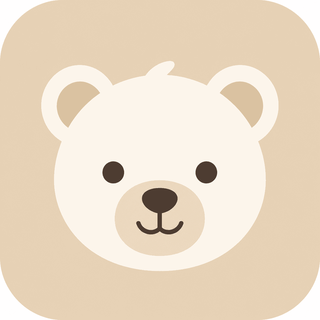
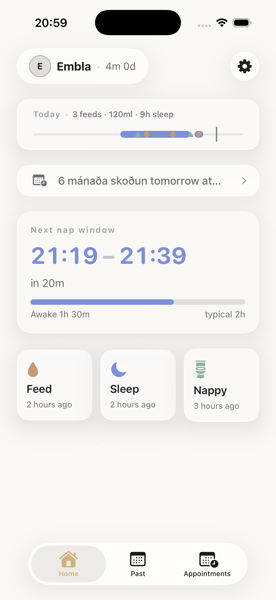
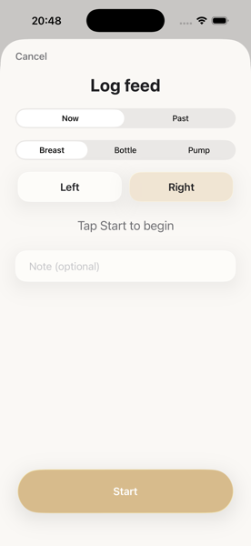
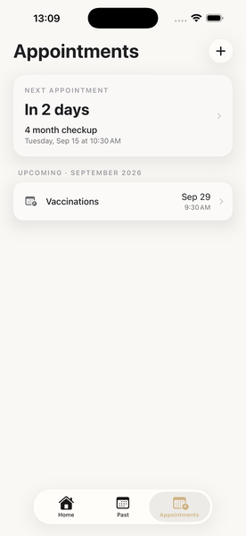
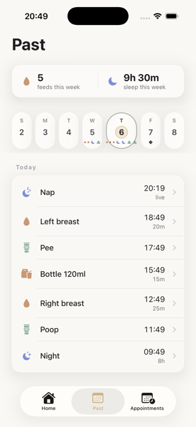

Sleep, feeding and diapers — all in one place, for both parents.
Log your baby's day in one tap and share it with the other parent in real time — no more texting "when did he last sleep?"

Built for sleepless nights
No more sticky notes or back-and-forth texts — just a clear picture of the day, together.
Log in one tap
Sleep, feeding and diaper changes — each with its own color and reminder, logged with a single tap. Nothing fiddly, nothing to set up.
Both parents, same picture
You both see the same log in real time, whether you're home or out — nobody has to ask what the other one did.
Remembers which side
Barnið automatically remembers which side you breastfed on last, so you don't have to try to recall it at 3am.
Finds the sweet spot
Barnið learns your baby's sleep pattern and suggests the best time for the next nap, before overtiredness sets in.
Lock Screen sleep timer
Track sleep time right from the Lock Screen or Dynamic Island — no need to open the app to see how it's going.
Here's what it looks like
Simple, warm and fast to use — one-handed, half asleep.



Barnið is on the App Store
Free to download. Grab the app and start logging in seconds.